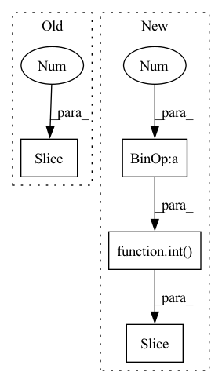

Pattern ID :34342
Before Change
bags_LUSC_path = pd.read_csv("datasets/LUSC.csv")
cut_LUAD = int(len(bags_LUAD_path)*0.8)
cut_LUSC = int(len(bags_LUSC_path)*0.8)
train_bags_LUAD_path = bags_LUAD_path.iloc[0 :cut_LUAD, :]
train_bags_LUSC_path = bags_LUSC_path.iloc[0:cut_LUSC, :]
test_bags_LUAD_path = bags_LUAD_path.iloc[cut_LUAD:, :]
test_bags_LUSC_path = bags_LUSC_path.iloc[cut_LUSC:, :]After Change
bags_path = pd.read_csv("datasets/tcga-dataset/TCGA.csv")
train_path = bags_path.iloc[0:int(len(bags_path)*0.8), :]
test_path = bags_path.iloc[int(len(bags_path)*0.8) :, :]
for epoch in range(1, args.num_epoch):
train_path = shuffle(train_path).reset_index(drop=True)In pattern: SUPERPATTERN
Frequency: 3
Non-data size: 4
Instances Fragment ID: 98448187
Project Name: binli123/dsmil-wsi
Commit Name: 85d914d0cca31c59f5e76e7894fadb15e8d2659d
Time: 2020-11-19
Author: bli346@wisc.edu
File Name: .ipynb_checkpoints/train_tcga-checkpoint.py
M Class Name: AnonimousClass
N Class Name: AnonimousClass
M Method Name: main(0)
N Method Name: main(0)
M Parent Class:
N Parent Class:
M File Name: .ipynb_checkpoints/train_tcga-checkpoint.py
N File Name: .ipynb_checkpoints/train_tcga-checkpoint.py
M Start Line: 125
M End Line: 135
N Start Line: 125
N End Line: 131
Before Change
Decompose into instances: why 72 features (36 feature + 36 mask)
src = src.permute(1, 0,2) // shape [128, 215, 36+36]
fea = src[:, :, :36 ] // [128, 215, 36]
// mask = src[:, :, 36:]
output = torch.zeros((batch_size, self.d_K)).cuda() // 68 = 2*(32+1+1)After Change
Decompose into instances: why 72 features (36 feature + 36 mask)
src = src.permute(1, 0,2) // shape [128, 215, 36+36]
// fea = src[:, :, :36] // [128, 215, 36]
fea = src[:, :, :int( src.shape[2]/2 ) ]
// mask = src[:, :, 36:]
output = torch.zeros((batch_size, self.d_K)).cuda() // 68 = 2*(32+1+1) Fragment ID: 98448184
Project Name: mims-harvard/raindrop
Commit Name: 114a0fa4619c5b2094807ebd7de0cbd30564c895
Time: 2021-09-24
Author: mz4730@student.uni-lj.si
File Name: code/baselines/models.py
M Class Name: SEFT
N Class Name: SEFT
M Method Name: forward(5)
N Method Name: forward(5)
M Parent Class: nn.Module
N Parent Class: nn.Module
M File Name: code/baselines/models.py
N File Name: code/baselines/models.py
M Start Line: 321
M End Line: 370
N Start Line: 331
N End Line: 398
Before Change
observation = observation["observation"] if isinstance(observation, dict) else observation
// goal is first in obs and griper is last (always)
goal = observation[0:3]
gripper = self.env.reward.get_accurate_gripper_position(observation[-3: ])
self.current_norm_distance = self.calc_distance(goal, gripper)
return self.current_norm_distance < self.threshold
After Change
observation = observation["observation"] if isinstance(observation, dict) else observation
o1 = observation[0:int(len(observation[:-3])/2)] if self.reward_type == "2dvu" else observation[0:3]
o2 = observation[int(len(observation[:-3])/2):-3 ]if self.reward_type == "2dvu" else observation[3:6]
self.current_norm_distance = self.calc_distance(o1, o2)
return self.current_norm_distance < self.threshold
Fragment ID: 98448185
Project Name: incognite-lab/mygym
Commit Name: 7352143b200e8189497e7bcdda964ca5da8d8ff9
Time: 2021-08-19
Author: vitek.zacek9@gmail.com
File Name: myGym/envs/task.py
M Class Name: TaskModule
N Class Name: TaskModule
M Method Name: check_distance_threshold(2)
N Method Name: check_distance_threshold(2)
M Parent Class:
N Parent Class:
M File Name: myGym/envs/task.py
N File Name: myGym/envs/task.py
M Start Line: 249
M End Line: 252
N Start Line: 218
N End Line: 220